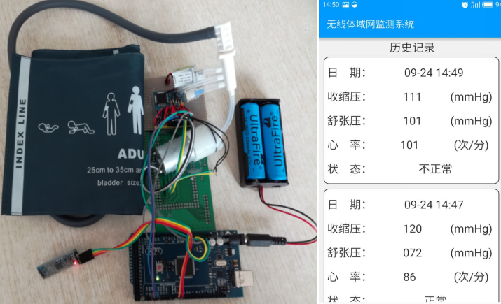

本实验为无线网络实验环境构建，是进行后续实验的基础。本实验系统的实测实验利用实验箱内各器件和PC进行，NS2仿真实验是在树莓派中运行，Contiki实测及仿真实验是在PC机中运行。通过将已制作好的系统镜像文件wnt-ns2与wnt-contiki导入树莓派和虚拟机， 搭建完整的无线网络实验环境。
点击链接可看完整视频演示，原始长视频约6分钟。
视频链接：https://v.qq.com/x/page/j0527akmica.html
百度云下载链接：https://pan.baidu.com/s/1MQheLQNsSO_Aa_2sFrlYaw 密码：i9e5
构建无线网络实验环境
本实验分2个部分。基础实验部分利用作者课题组开发的软件测量不同环境下WiFi的RSSI值，观察环境变化对RSSI值的影响。扩展实验部分则是对ZigBee网络RSSI值的测量，向两个CC2530节点中烧录对应代码，以观测环境变化对ZigBee网络RSSI值的影响。
点击链接可看完整视频演示，原始长视频约8分钟。
视频链接：https://v.qq.com/x/page/d0540vnb7y4.html
百度云下载链接：https://pan.baidu.com/s/1R7WNqFfwPzxtZ-yIWC5x0w 密码：62b0
无线网络环境RSSI测量实验
本实验分2个部分。基础实验部分首先配置无线路由器(包括SSID/密码/信道/DHCP等)，以此组建无线局域网；再利用inSSIDer软件测量不同信道下WiFi信号的稳定性，并可更换到较为空闲的的信道。
扩展实验中利用IPerf软件测量信道较繁忙和较空闲情况下的网络传输速率。在服务器上监听3个客户端，客户端同时向服务器传输数据，以此测量每条数据流的传输速率以及总传输带宽。
点击链接可看完整视频演示，原始长视频约9分钟。
视频链接：https://v.qq.com/x/page/a0540s6p1sh.html
百度云下载链接：https://pan.baidu.com/s/1mW6kWV5OSLzv2_xnVp004g 密码：6xa2
无线局域网组网和管理实验
本实验在Windows环境下自主开发一个无线局域网信号测量软件。该软件通过C++调用Winpcap网络开发包，对WiFi数据进行捕获，储存至临时文件。随后在Java环境下，通过内置表格类JTable和开源图表绘制类库JFreeChart，对临时文件中的数据进行展示和图形化分析。
点击链接可看完整视频演示，原始长视频约7分钟。
视频链接：https://v.qq.com/x/page/z054062yn2w.html
百度云下载链接：https://pan.baidu.com/s/13NLkE4DWB0elEWQHRuY9Rg 密码：ijqi
无线局域网信号测量软件开发实验
本实验分别在Windows和Linux系统下使用Wireshark捕获无线局域网数据包进行分析，并介绍了在Linux系统下Kismet软件的使用，实验结果以数据和图形方式显示，读者可自行进行分析。
点击链接可看完整视频演示，原始长视频约4分钟。
视频链接：https://v.qq.com/x/page/o0540f7maw8.html
百度云下载链接：https://pan.baidu.com/s/1Uwk8t8qGXJJGHsD_Nj7XpA 密码：oepu
无线局域网数据分组分析
本实验在Windows环境下，利用Winpcap网络开发组件，实现了一个无线局域网数据分组分析软件，界面类似WireShark。该软件能够对无线局域网的数据分组进行捕获，并可进一步分析其协议类型以及下层帧的构成。读者可通过本实验开发流程，熟悉网络抓包原理，了解报文格式和功能。
点击链接可看完整视频演示，原始长视频约16分钟。
视频链接：https://v.qq.com/x/page/q0540j7xqeq.html
百度云下载链接：https://pan.baidu.com/s/15m3mmA-EXuen6A_stnwKLA 密码：l9kj
无线局域网数据分组分析软件开发实验
隐藏节点和暴露节点问题是无线网络尤其是射频无线电环境的经典问题。本实验通过对隐藏节点和暴露节点进行仿真，通过实验产生的trace数据对仿真过程中的延迟、丢包、吞吐量等进行分析。
点击链接可看完整视频演示，原始长视频约11分钟。
视频链接：https://v.qq.com/x/page/y05154ygolc.html
百度云下载链接：https://pan.baidu.com/s/1IdL44rSSJ8FtMZanfb88_A 密码：9suh
隐藏节点和暴露节点仿真实验
WiMax是无线城域网的典型技术方案，本实验对WiMax进行仿真，仿真拓扑包含移动节点、基站节点和目标节点，数据由移动节点产生，经过基站节点转发给目标节点。
点击链接可看完整视频演示，原始长视频约9分钟。
视频链接：https://v.qq.com/x/page/p0520dld4xv.html
百度云下载链接：https://pan.baidu.com/s/1Hv1aDi3PWmbm4x0Ide8HRQ 密码：9lfw
无线城域网WiMax仿真实验
本实验在串口调试软件中，应用AT指令对SIM800C模块进行控制，以实现蜂窝移动网络的基础通信功能。其中包括：SIM800C模块与手机之间进行语音通话以及短信通话，并使用SIM800C访问某一网站，访问成功后利用SIM800C的HTTP GET功能获取该网站的HTML代码。
点击链接可看完整视频演示，原始长视频约9分钟。
视频链接：https://v.qq.com/x/page/b0527g4n8c6.html
百度云下载链接：https://pan.baidu.com/s/12VoRLqOm-VtM61H2hIwtjA 密码：8h47
移动蜂窝网络的数据传输实验
本实验针对卫星网络，设置5条数据流进行对比，起点均为北京，终点分别为上海、香港、悉尼、纽约和里约热内卢。采用CBR作为数据源，并利用UDP进行数据传输。分析trace文件来对比实验变化和通信距离的关系，实际数据传输路径中卫星节点个数不同，也会造成端到端的时延不同。
点击链接可看完整视频演示，原始长视频约4分钟。
视频链接：https://v.qq.com/x/page/y0540g8el5d.html
百度云下载链接：https://pan.baidu.com/s/1w7gX45VbIePdnR1B_UmFrw 密码：j75f
卫星网络系统仿真实验
本实验为GPS实测实验，共两部分。基础实验：使用GPS模块收集当前位置的经纬度坐标和海拔高度，由Arduino Mega 2560单片机模块处理数据，最后通过串口通信将处理后的数据传输到PC端。扩展实验：结合WiFi网络与GPS进行开发性实验，同样使用GPS模块收集当前位置的经纬度坐标和海拔高度，由Arduino Mega 2560单片机模块处理数据，通过WiFi模块建立TCP连接将数据发送到服务器，在服务器端显示位置坐标。
点击链接可看完整视频演示，原始长视频约8分钟。
视频链接：https://v.qq.com/x/page/z067010swcj.html
百度云下载链接：https://pan.baidu.com/s/1O7oPd6ck8RteviY301WK-A 密码：4e7y
GPS室外定位实验
动态源路由协议DSR （Dynamic Source Routing）仿真实验，其中各节点先期通过RREQ/RREP（路由请求/路由应答）建立起相互间的路由，然后利用DSR动态源路由协议对各节点之间建立的路由进行确定和维护，提供快速式反应服务，确保数据分组的高效交付。
点击链接可看AODV协议仿真实验短视频演示，原始长视频约4分钟。
视频链接：https://v.qq.com/x/page/c05081dcl0j.html
百度云下载链接：https://pan.baidu.com/s/1edGczoA09k-6-eSt529jWw 密码：s49y
AODV和DSR协议仿真实验
定向扩散(Directed Diffusion，DD)是以数据为中心、查询驱动的无线传感网经典路由协议。本实验对DD协议进行仿真，定义了一个大小为670*670的仿真拓扑，设置了10个无线传感器节点，并配置了DD协议。S-MAC是基于竞争的MACC层协议。本实验对S-MAC协议进行仿真，定义了一个含14个WSN节点的仿真拓扑。
点击链接可看完整视频演示，原始长视频约14分钟。
视频链接：https://v.qq.com/x/page/a0520h3y2vu.html
百度云下载链接：https://pan.baidu.com/s/1M4YixmMxeV03reNKXQdiMQ 密码：1ttq
DD和S-MAC协议仿真实验
本仿真实验针对水下传感网的VBF路由协议，仿真分析传输性能，观看代码运行过程，节点1/2/3/4/5向节点0发送数据，打开数据文件，查看节点消耗能量和平均时延。
点击链接可看完整视频演示，原始长视频约8分钟。
视频链接：https://v.qq.com/x/page/k0531cht9vo.html
百度云下载链接：https://pan.baidu.com/s/1Mywg5m11KA_V3g7oiqHRgA 密码：kvi2
水下无线传感网协议仿真实验
本实验为Zigbee无线传感网实测实验的基础，搭建Zigbee网络实测平台，完成Z-Stack、IAR EW8051、CC Debugger、Smart Flash Programmer等环境的安装，之后的Zigbee网络、CC2530传感器节点的实验前需要先完成本实验。
点击链接可看完整视频演示，原始长视频约5分钟。
视频链接：https://v.qq.com/x/page/i052890ial4.html
百度云下载链接：https://pan.baidu.com/s/1-Dg0yjTD7PwqII3HnVO7Zg 密码：wmcx
ZigBee节点安装和组网基础
本实验由3部分组成：(1)Arduino单片机开发环境的配置和代码烧录过程；(2)Arduino单片机控制蓝牙4.0模块，以实现Arduino节点与安卓手机之间的数据通信；(3)Arduino单片机控制Zigbee模块，以实现Arduino节点与主机之间的无线通信。
点击链接可看完整视频演示，原始长视频约16分钟。
视频链接：https://v.qq.com/x/page/b0540efn06p.html
百度云下载链接：https://pan.baidu.com/s/14D_nngF5YeEZOWaIRKwzAA 密码：zj1i
Arduino节点安装与开发基础
基于ZigBee多跳无线网络的室外环境实时监测系统，其中终端节点利用各类传感器收据环境数据，经由各路由节点并通过ZigBee协议多跳远距离传输至协调器节点，再使用串口通信读出各终端节点所采集的环境数据信息。
点击链接可看完整视频演示，原始长视频约12分钟。
视频链接：https://v.qq.com/x/page/k0521gikot6.html
百度云下载链接：https://pan.baidu.com/s/1wBm-AHK8Z5VW0-Wu9rkqWg 密码：76ql
基于ZigBee的户外环境监测网络实验
IEEE 802.15.4和ZBR协议分别是WSN的典型MAC和路由协议，本实验对这两种协议进行仿真，学习、分析和体会不同协议的技术特点。
点击链接可看完整视频演示，原始长视频约10分钟。
视频链接：https://v.qq.com/x/page/z0520lukffa.html
百度云下载链接：https://pan.baidu.com/s/1x0ZxmhAiOW81Z8S1kR2BFQ 密码：ohq5
IEEE802.15.4和ZBR协议仿真
RFID读卡器先读取卡号，通过蓝牙模块，将卡号数据发至手机APP(开放源码)中，可与APP中已有卡号信息比对验证。可体会RFID/蓝牙/手机APP等环节连贯性，实际展现了一个真实的卡应用系统开发设计过程。学生可二次开发成面向校园卡(工作卡)的考勤管理、库存管理等，用于毕设或竞赛作品。
点击链接可看短视频演示，原始长视频约4分钟。
视频链接：https://v.qq.com/x/page/i05095d4tj1.html
百度云下载链接：https://pan.baidu.com/s/126Sjv1aLXMZGeXT7SmrOZw 密码：k76m

RFID数据读写/传输实测实验
本实验在树莓派上安装操作系统，并完成相应配置，使树莓派成为1个带DNS服务的无线路由器。首先，将树莓派操作系统Raspbian用Win32DiskImager烧录到TF卡上。然后将TF卡和USB无线网卡插入并启动树莓派，进行相关配置。最后进行网络设置，并安装DNS服务/无线共享软件/DHCP服务。
点击链接可看完整视频演示，原始长视频约11分钟。
视频链接：https://v.qq.com/x/page/e0540kb6lri.html
百度云下载链接：https://pan.baidu.com/s/1VafYWaH2MWsTfbJtU6dOsg 密码：6bwe
树莓派安装和配置WiFi路由器
Contiki是一个面向物联网的嵌入式操作系统，所需硬件要求门槛较低，应用较为广泛。将Contiki系统中的协议例程经过编译，烧录到CC2530节点。然后开启CC2530根节点，向其通信覆盖范围内其他节点发送广播包，处在通信范围内的节点接收到根节点的广播包后，解析和读取有关数据。
点击链接可看短视频演示，原始长视频约6分钟。
视频链接：https://v.qq.com/x/page/w0531nbxap5.html
百度云下载链接：https://pan.baidu.com/s/1rrSnU0v8eNvIjC4HMpj1qg 密码：9oi7
Contiki系统测试与组网基础
CoAP协议是物联网环境的主流应用层协议，可以与互联网环境的HTTP协议相提并论。本实验在Contiki系统下，采用Cooja仿真器创建了1个CoAP服务器节点和1个边界路由节点，并采用tunslip6连通边界路由和本地主机，使主机能访问CoAP服务器节点。最后，通过主机上的火狐浏览器来对CoAP服务器发起访问请求。
点击链接可看完整视频演示，原始长视频约7分钟。
视频链接：https://v.qq.com/x/page/b0520ab861u.html
百度云下载链接：https://pan.baidu.com/s/1WJz_7CwyOS5f8cuootLp_A 密码：bdag
CoAP协议仿真实验
Contiki系统下，采用Cooja仿真平台，利用RPL协议进行无线仿真实验，其中各节点使用的RPL协议根据其目标函数，利用路由度量和约束条件算出最优路径，构建面向目标的有向无环图(DODAG)，形成最终的数据转发路径。
点击链接可看完整视频演示，原始长视频约9分钟。
视频链接：https://v.qq.com/x/page/s0520pukabk.html
百度云下载链接：https://pan.baidu.com/s/18TM1RTYbspSA_-dWfSWXkA 密码：b9jq
RPL协议仿真实验
本实验的网络由搭载温度/湿度传感器模块的普通节点和DODAG根节点组成。普通节点负责采集/存储和上传温度/湿度信息，并根据DODAG转发临界点发送的温度/湿度信息。根节点完成温度/湿度数据汇聚并上传至PC机。
点击链接可看完整视频演示，原始长视频约11分钟。
视频链接：https://v.qq.com/x/page/c05407az4or.html
百度云下载链接：https://pan.baidu.com/s/1FBUWIPCR3_73D9UOjEF4jQ 密码：gthc
基于Contiki和RPL的无线传感网组网实测
IEEE 802.11p协议仿真实验主要分析在节点移动情形下，MAC层采用IEEE802.11p协议时，节点间的数据传输情况。VANET仿真实验主要分析在街道场景下（无障碍物）下，随着车辆运动，V2V（车与车）之间的通信性能。本实验构建了纵横形式的街道，同时采用9个节点构建车载通信试验。
点击链接可看完整视频演示，原始长视频约6分钟。
视频链接：https://v.qq.com/x/page/w0528pbdeoh.html
百度云下载链接：https://pan.baidu.com/s/152qCHCzTZlnALClgTK-YQg 密码：cbzs
IEEE 802.11p和VANET协议仿真
无线体域网健康监测系统中，当带有心率、收缩压、舒张压传感器的绷带收集到监测数据后，通过与Adurino单片机相连，经由Adurino单片机的数据处理，通过BLE4.0/IEEE802.15.6/802.15.4等协议传输到健康监测系统APP，最后展示出各项生理指标数据。
点击链接可看完整视频演示，原始长视频约8分钟。
视频链接：https://v.qq.com/x/page/k0521linl55.html
百度云下载链接：https://pan.baidu.com/s/1BGbIfKdGGUsBmI1YuXLJbQ 密码：mbko


无线体域网健康监测系统设计开发实验
本实验学习无线室内定位，利用已知节点(锚点)对未知节点进行定位，采用的定位技术主要依赖于节点的RSSI。实验拓扑结构如图所示，共8个节点，其中节点0至节点4为未知待定位节点，节点5至节点7为已知节点(锚节点)。
点击链接可看完整视频演示，原始长视频约5分钟。
视频链接：https://v.qq.com/x/page/p0528b8f8k0.html
百度云下载链接：https://pan.baidu.com/s/1mX5ZNtuQNq8fvkrNm1gUPA 密码：cuwh
无线室内定位仿真实验
本实验程序使用C++和Java环境开发。首先估算室内房间的大小，并定义坐标系。随后将3部手机开启热点，部署为参考锚节点。将PC机作为待定位节点，接收3个锚节点信号，根据收到的RSSI信号强度，可测算发射机与接收机的距离。最终通过三边定位算法计算出待定位节点坐标。
点击链接可看完整视频演示，原始长视频约5分钟。
视频链接：https://v.qq.com/x/page/l05402o6f6g.html
百度云下载链接：https://pan.baidu.com/s/1FMGpIqcSCQDC4ThnZcnDkQ 密码：yz7u
WiFi无线室内定位实践
无线网络在带来方便性的同时产生了很多问题，开放的无线介质、多跳、自组织、无中心的组网方式，使得其更加脆弱。其中黑洞和灰洞攻击是典型的网络攻击代表，对数据传输危害极大。本实验以黑洞和灰洞攻击为例，通过仿真实验来描述简单的黑洞和灰洞攻击过程。
点击链接可看完整视频演示，原始长视频约4分钟。
注意事项：由于此视频名涉及审核问题，所以本视频以标题“无线网络灰黑洞协议仿真”上传
视频链接：https://v.qq.com/x/page/j0531v5jmt3.html
百度云下载链接：https://pan.baidu.com/s/17nw0i8nSyPqVa524TIkriQ 密码：9o44
无线网络攻击协议仿真
Watchdog监测邻节点转发数据包的情况，并设定相应阈值来检测出潜在的攻击节点，是有效防御黑洞和灰洞攻击的前提。本质上，Watchdog检测每个包被转发的情况，若果节点未有效转发数据包，则被认为恶意。换言之，邻节点的每个包都被Watchdog监听，并与自身缓存中的包进行比较，以验证是否正确转发。
点击链接可看完整视频演示，原始长视频约4分钟。
视频链接：https://v.qq.com/x/page/m0531ir9659.html
百度云下载链接：https://pan.baidu.com/s/1eHcwzFzoCvhqBghaaFCkBg 密码：ivue
Watchdog无线网络检测仿真
参考教材第3章、第9章，使用Android手机通过WiFi模块或蓝牙模块与Arduino单片机通信，从而控制LED灯的状态变换。
点击链接可看完整视频演示，原始长视频约9分钟。
视频链接：https://v.qq.com/x/page/m07286utpz2.html?pcsharecode=0gIG7qL4&sf=uri
百度云下载链接：https://pan.baidu.com/s/1-_mHqSbkzhX2r33e8dcNaw 密码：83s6

基于蓝牙和WiFi的智能灯控系统
消息队列遥测传输(Message Queuing Telemetry Transport, MQTT)是一个基于客户端-服务器的轻量级消息发布/订阅传输协议。可广泛应用于多种物联网应用场景中。
点击链接可看完整视频演示，原始长视频约9分钟。
视频链接：https://v.qq.com/x/page/r0670vmglyq.html
百度云下载链接：https://pan.baidu.com/s/17vIKZL0jrYFAYEqJmnmFgg 密码：f492
基于MQTT协议的温度实时监测
LoRa是一种低功耗广域网通信技术，是美国Semtech公司采用和推广的一种基于扩频技术的超远距离无线传输方案。这一方案改变了以往关于传输距离与功耗的折衷考虑方式，为用户提供一种简单的能实现远距离、长电池寿命、大容量的系统，进而扩展了传感网络。
点击链接可看完整视频演示，原始长视频约12分钟。
视频链接：https://v.qq.com/x/page/e0671zawe2i.html
百度云下载链接：https://pan.baidu.com/s/1hDEYYdgMDu5AsW6oDGpFog 密码：11mc
低功耗广域物联网(LoRa)数据传输
Robot Operating Sysem(ROS)是一个机器人软件框架。它提供了操作系统应有的服务，包括硬件抽象、底层设备控制、常见函数的实现、进程间消息传递、包管理等。
点击链接可看完整视频演示，原始长视频约16分钟。
视频链接：https://v.qq.com/x/page/l0670balycb.html
百度云下载链接：https://pan.baidu.com/s/1RTUWL8CqFX91FKySms7ayw 密码：v93t
机器人环境配置与开发基础实验
机器人即时定位和地图构建(Simultaneous Localization And Mapping, SLAM)，为解决机器人在未知环境未知位置中绘制地图的问题，以实现机器人能够无障碍地在此环境下行动的目的。
点击链接可看完整视频演示，原始长视频约14分钟。
视频链接：https://v.qq.com/x/page/n0755h2bao9.html
百度云下载链接：https://pan.baidu.com/s/1b4S6n7HD1z55YBAOBOYY6g 密码：3v2b
机器人即时定位和地图构建
参考教材第3章WIFI及蓝牙的背景知识，利用ESP8266WiFi模块通过TCP/IP协议与手机APP完成通信，以实现对小船控制的实验目的。
点击链接可看完整视频演示，原始长视频约11分钟。
视频链接：https://v.qq.com/x/page/z0755iy8u76.html
百度云下载链接：https://pan.baidu.com/s/1VUFHXCPp-zwHHcOOvC6Q2w 密码：c083
基于WIFI的无人船控制实验
本实验由PC控制端及无人船两部分构成，将PC端串口软件上的控制指令通过LoRa模块，与无人船上开发板进行通信，实现对无人船控制及GPS数据采集的目的。
点击链接可看完整视频演示，原始长视频约9分钟。
视频链接：https://v.qq.com/x/page/f0755upc22v.html
百度云下载链接：https://pan.baidu.com/s/1QTKccq8zf_qsspdywDvUEw 密码：1tmd
基于LoRa的远距离无人船控制实验